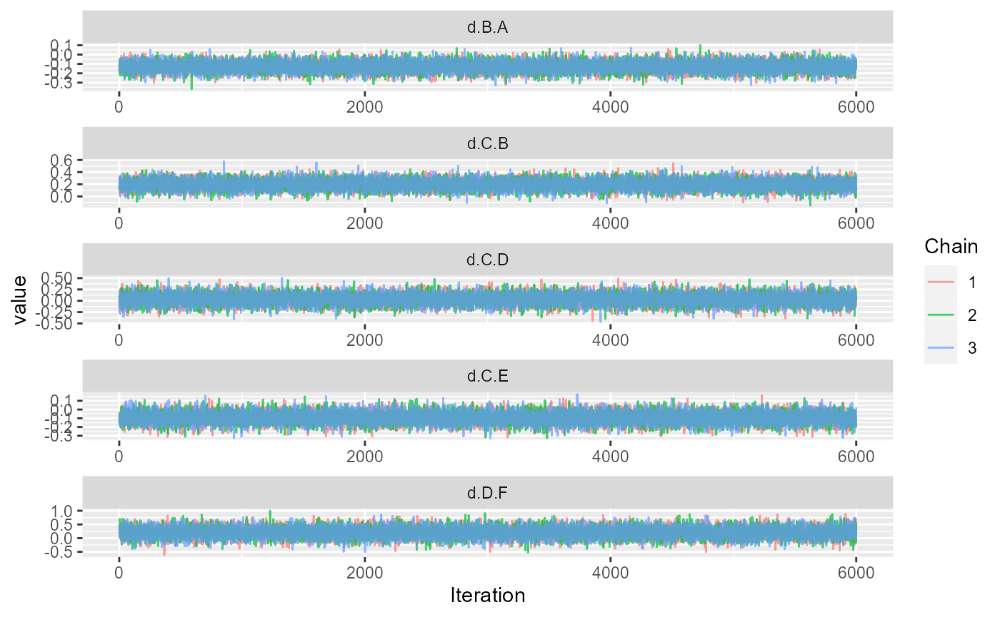
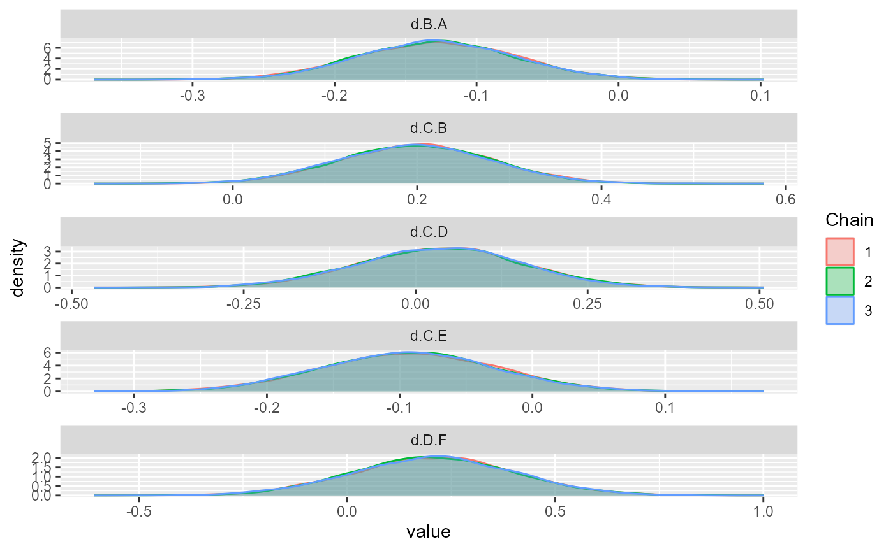
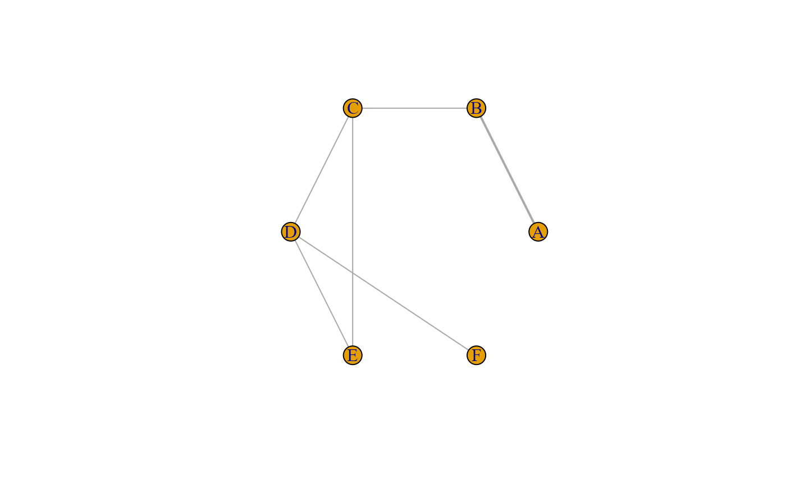
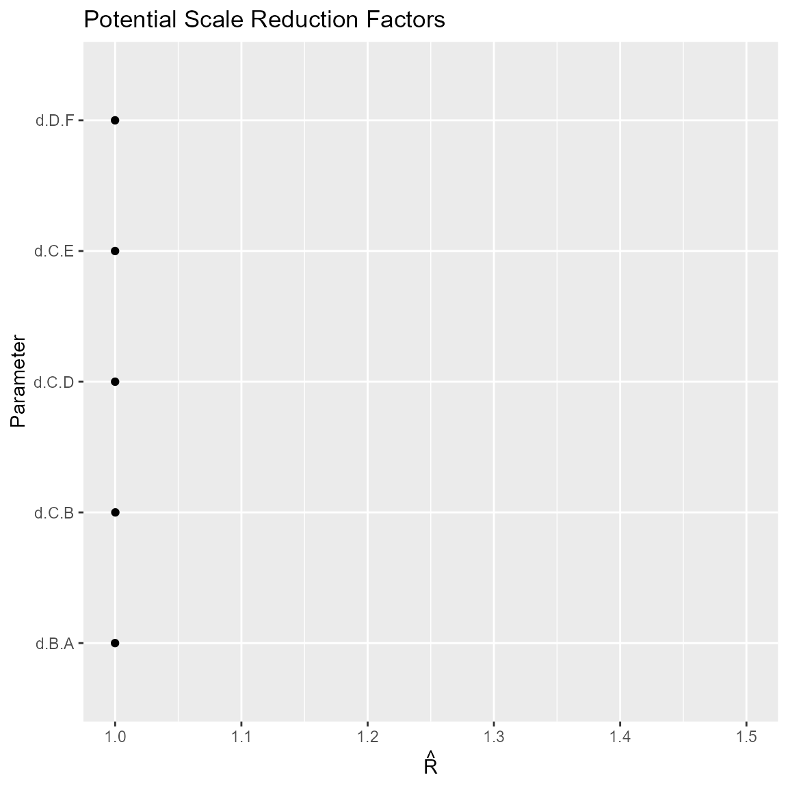
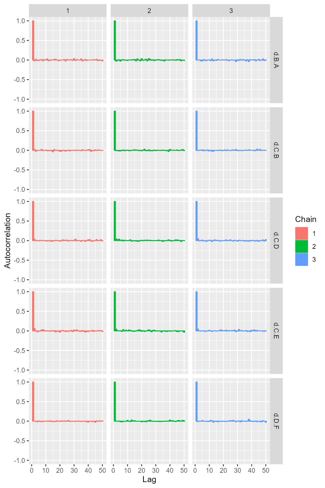
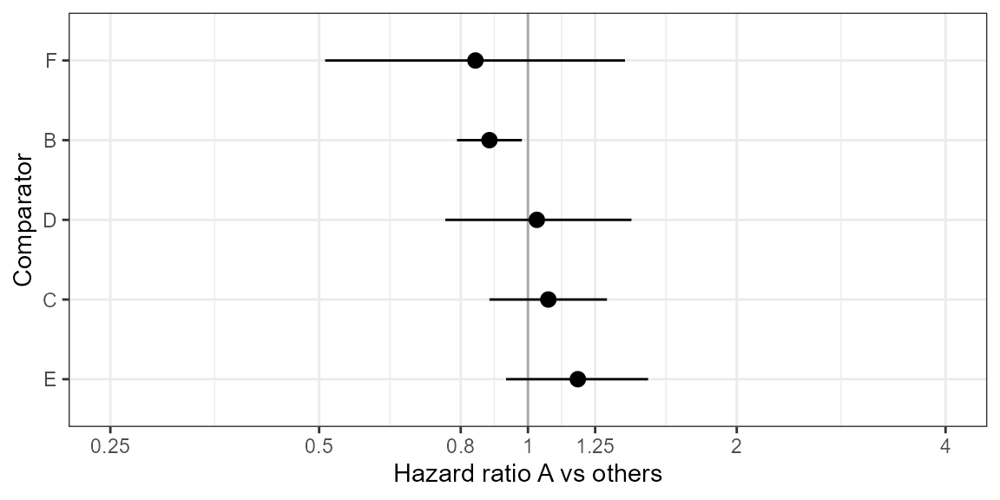

example-nma-hr-data.rmdThis vignette provides a short example of a Bayesian NMA for HR data. The model fit relies on the gemtc package, pre- and post-processing is done with gemtcPlus.
# load example data
data("hr_data", package = "gemtcPlus")
#Plan model
model_plan <- plan_hr(bth.model = "FE",
n.chain = 3,
n.iter = 6000,
thin = 1,
n.adapt = 1000,
link = "identity",
linearModel = "fixed")
model <- nma_fit(model_input = model_input)## Warning in (function (network, type = "consistency", factor = 2.5, n.chain =
## 4, : Likelihood can not be inferred. Defaulting to normal.## Compiling model graph
## Resolving undeclared variables
## Allocating nodes
## Graph information:
## Observed stochastic nodes: 7
## Unobserved stochastic nodes: 5
## Total graph size: 190
##
## Initializing model
ggs_traceplot(ggs(model$samples))
ggs_density(ggs(model$samples))
summary(model)##
## Results on the Mean Difference scale
##
## Iterations = 1:6000
## Thinning interval = 1
## Number of chains = 3
## Sample size per chain = 6000
##
## 1. Empirical mean and standard deviation for each variable,
## plus standard error of the mean:
##
## Mean SD Naive SE Time-series SE
## d.B.A -0.12756 0.05476 0.0004081 0.0004082
## d.C.B 0.19668 0.08406 0.0006265 0.0006266
## d.C.D 0.03582 0.12055 0.0008985 0.0009497
## d.C.E -0.09242 0.06568 0.0004895 0.0005096
## d.D.F 0.20726 0.19740 0.0014713 0.0014406
##
## 2. Quantiles for each variable:
##
## 2.5% 25% 50% 75% 97.5%
## d.B.A -0.23423 -0.16416 -0.12744 -0.09073 -0.01945
## d.C.B 0.03277 0.13963 0.19664 0.25326 0.36148
## d.C.D -0.20174 -0.04556 0.03726 0.11698 0.26933
## d.C.E -0.22075 -0.13705 -0.09200 -0.04789 0.03555
## d.D.F -0.17819 0.07160 0.20733 0.34140 0.59814
##
## -- Model fit (residual deviance):
##
## Dbar pD DIC
## 5.482157 4.980892 10.463049
##
## 7 data points, ratio 0.7832, I^2 = 0%
plot(model_input$fitting_data)
get_mtc_sum(model)## DIC pD resDev dataPoints
## 1 10.46 4.98 5.48 7Update model plan and re-run fit.
#Plan model
model_plan <- plan_hr(bth.model = "RE",
n.chain = 3,
n.iter = 6000,
thin = 1,
n.adapt = 1000,
link = "identity",
linearModel = "random",
bth.prior = mtc.hy.prior(type = "var", distr = "dlnorm",-4.18, 1 / 1.41 ^ 2)
)
model <- nma_fit(model_input = model_input)## Warning in (function (network, type = "consistency", factor = 2.5, n.chain =
## 4, : Likelihood can not be inferred. Defaulting to normal.## Compiling model graph
## Resolving undeclared variables
## Allocating nodes
## Graph information:
## Observed stochastic nodes: 7
## Unobserved stochastic nodes: 5
## Total graph size: 190
##
## Initializing modelThe ggmcmc package provides ggplot2 versions of all major convergence plots and diagnostics.
Figure Traceplot
ggs_traceplot(ggs(model$samples))Figure Densityplot
ggs_density(ggs(model$samples))Figure Brooks-Gelman-Rubin convergence diagnostic (Rhat)

Figure Auto-correlation plot
ggs_autocorrelation(ggs(model$samples))
Figure Running means
ggs_running(ggs(model$samples))The contrasts in this model are log-hazard ratios (which correspond to differences in log-hazard rates).
Unfortunately, gemtc does not provide an estimate of the effective sample size (n.eff). Instead, a time-series SE is given. As a rule of thumb, the length of the MCMC is sufficient if the time-series SE is smaller than 2%(-5%) of the posterior SD.
summary(model)##
## Results on the Mean Difference scale
##
## Iterations = 1:6000
## Thinning interval = 1
## Number of chains = 3
## Sample size per chain = 6000
##
## 1. Empirical mean and standard deviation for each variable,
## plus standard error of the mean:
##
## Mean SD Naive SE Time-series SE
## d.B.A -0.12756 0.05476 0.0004081 0.0004082
## d.C.B 0.19668 0.08406 0.0006265 0.0006266
## d.C.D 0.03582 0.12055 0.0008985 0.0009497
## d.C.E -0.09242 0.06568 0.0004895 0.0005096
## d.D.F 0.20726 0.19740 0.0014713 0.0014406
##
## 2. Quantiles for each variable:
##
## 2.5% 25% 50% 75% 97.5%
## d.B.A -0.23423 -0.16416 -0.12744 -0.09073 -0.01945
## d.C.B 0.03277 0.13963 0.19664 0.25326 0.36148
## d.C.D -0.20174 -0.04556 0.03726 0.11698 0.26933
## d.C.E -0.22075 -0.13705 -0.09200 -0.04789 0.03555
## d.D.F -0.17819 0.07160 0.20733 0.34140 0.59814
##
## -- Model fit (residual deviance):
##
## Dbar pD DIC
## 5.482157 4.980892 10.463049
##
## 7 data points, ratio 0.7832, I^2 = 0%In the example here, the chain length seems borderline (sufficient for posterior means and medians, but rather a bit too small for stable 95% credible intervals).
To judge overall model fit, the residual deviance should be compared to the number of independent data points (which can be done via a small utility function in gemtcPlus).
get_mtc_sum(model)## DIC pD resDev dataPoints
## 1 10.46 4.98 5.48 7Assume new treatment is “A” and is to be compared vs all other treatments.
Table Hazard ratios A vs other treatments
HR <- get_mtc_newVsAll(model, new.lab = "A", transform = "exp", digits = 2)
HR## Comparator Med CIlo CIup
## 1 B 0.88 0.79 0.98
## 2 C 1.07 0.88 1.30
## 3 D 1.03 0.76 1.41
## 4 E 1.17 0.93 1.49
## 5 F 0.84 0.52 1.38Table Probability A better than other treatments (better meaning smaller HR)
get_mtc_probBetter(model, new.lab = "A", smaller.is.better = TRUE, sort.by = "effect")## New Comparator probNewBetter
## 1 A B 0.990
## 5 A F 0.755
## 3 A D 0.416
## 2 A C 0.245
## 4 A E 0.089Figure Forest plot A vs other treatments
plot_mtc_forest(x = HR, lab = "Hazard ratio A vs others", sort.by = "effect") 
Table Cross-tabulation of HRs
ctab <- round(exp(relative.effect.table(model)), 2)
pander::pandoc.table(as.data.frame(ctab), split.tables = Inf)| A | B | C | D | E | F | |
|---|---|---|---|---|---|---|
| A | A | 1.14 (1.02, 1.26) | 0.93 (0.77, 1.14) | 0.97 (0.71, 1.31) | 0.85 (0.67, 1.08) | 1.19 (0.73, 1.94) |
| B | 0.88 (0.79, 0.98) | B | 0.82 (0.7, 0.97) | 0.85 (0.64, 1.14) | 0.75 (0.61, 0.92) | 1.05 (0.65, 1.68) |
| C | 1.07 (0.88, 1.3) | 1.22 (1.03, 1.44) | C | 1.04 (0.82, 1.31) | 0.91 (0.8, 1.04) | 1.28 (0.81, 1.99) |
| D | 1.03 (0.76, 1.41) | 1.17 (0.88, 1.57) | 0.96 (0.76, 1.22) | D | 0.88 (0.69, 1.13) | 1.23 (0.84, 1.82) |
| E | 1.17 (0.93, 1.49) | 1.34 (1.08, 1.65) | 1.1 (0.97, 1.25) | 1.14 (0.89, 1.45) | E | 1.4 (0.88, 2.2) |
| F | 0.84 (0.52, 1.38) | 0.95 (0.6, 1.53) | 0.78 (0.5, 1.23) | 0.81 (0.55, 1.2) | 0.72 (0.46, 1.13) | F |
rk <- rank.probability(model, preferredDirection = -1)
mrk <- reshape2::melt(rk[,], varnames = c("Treatment", "Rank"), value.name = "Probability")
fig <- ggplot(data = mrk) +
geom_line(aes(Rank, Probability, color = Treatment, linetype = Treatment), size = 1.5) +
theme_bw()Figure Rankogram
plot(fig)Table Rank probabilities
## Rank probability; preferred direction = -1
## Rank 1 Rank 2 Rank 3 Rank 4 Rank 5 Rank 6
## A 0.06794444 0.127111111 0.245388889 0.35472222 0.200611111 0.0042222222
## B 0.00000000 0.001388889 0.007277778 0.12422222 0.459944444 0.4071666667
## C 0.04327778 0.420277778 0.359222222 0.14883333 0.027055556 0.0013333333
## D 0.11900000 0.204777778 0.258611111 0.24594444 0.150944444 0.0207222222
## E 0.71283333 0.199500000 0.068833333 0.01555556 0.003055556 0.0002222222
## F 0.05694444 0.046944444 0.060666667 0.11072222 0.158388889 0.5663333333
cat(model$model$code)## model {
## # Likelihood for arm-based data
## ## OMITTED
## # Likelihood for contrast-based data (univariate for 2-arm trials)
## for(i in studies.r2) {
## for (k in 2:na[i]) {
## mest[i, k] <- delta[i, k]
## }
## m[i, 2] ~ dnorm(mest[i, 2], prec[i, 2])
## prec[i, 2] <- 1 / (e[i, 2] * e[i, 2])
##
## dev[i, 1] <- pow(m[i, 2] - mest[i, 2], 2) * prec[i, 2]
## }
## # Likelihood for contrast-based data (multivariate for multi-arm trials)
## ## OMITTED
##
## # Fixed effect model
## for (i in studies) {
## delta[i, 1] <- 0
## for (k in 2:na[i]) {
## delta[i, k] <- d[t[i, 1], t[i, k]]
## }
## }
##
## # Relative effect matrix
## d[1, 1] <- 0
## d[1, 2] <- -d.B.A
## d[1, 3] <- -d.B.A + -d.C.B
## d[1, 4] <- -d.B.A + -d.C.B + d.C.D
## d[1, 5] <- -d.B.A + -d.C.B + d.C.E
## d[1, 6] <- -d.B.A + -d.C.B + d.C.D + d.D.F
## for (i in 2:nt) {
## for (j in 1:nt) {
## d[i, j] <- d[1, j] - d[1, i]
## }
## }
##
## prior.prec <- pow(re.prior.sd, -2)
##
## # Study baseline priors
## ## OMITTED
##
## # Effect parameter priors
## d.B.A ~ dnorm(0, prior.prec)
## d.C.B ~ dnorm(0, prior.prec)
## d.C.D ~ dnorm(0, prior.prec)
## d.C.E ~ dnorm(0, prior.prec)
## d.D.F ~ dnorm(0, prior.prec)
##
## }BEE repository: /home/bceuser/benneti1/gemtcPlus/vignettes
date()## [1] "Tue Jul 26 12:11:17 2022"## R version 4.0.3 (2020-10-10)
## Platform: x86_64-pc-linux-gnu (64-bit)
## Running under: Red Hat Enterprise Linux
##
## Matrix products: default
## BLAS/LAPACK: /usr/lib64/libopenblas-r0.2.20.so
##
## locale:
## [1] LC_CTYPE=en_US.UTF-8 LC_NUMERIC=C
## [3] LC_TIME=en_US.UTF-8 LC_COLLATE=en_US.UTF-8
## [5] LC_MONETARY=en_US.UTF-8 LC_MESSAGES=en_US.UTF-8
## [7] LC_PAPER=en_US.UTF-8 LC_NAME=C
## [9] LC_ADDRESS=C LC_TELEPHONE=C
## [11] LC_MEASUREMENT=en_US.UTF-8 LC_IDENTIFICATION=C
##
## attached base packages:
## [1] stats graphics grDevices utils datasets methods base
##
## other attached packages:
## [1] ggmcmc_1.5.1.1 ggplot2_3.3.6 tidyr_1.2.0 gemtcPlus_1.0.0
## [5] R2jags_0.7-1 rjags_4-13 gemtc_1.0-1 coda_0.19-4
## [9] dplyr_1.0.9
##
## loaded via a namespace (and not attached):
## [1] sass_0.4.2 jsonlite_1.8.0 splines_4.0.3
## [4] network_1.17.2 bslib_0.3.1 assertthat_0.2.1
## [7] highr_0.9 metafor_3.4-0 pander_0.6.3
## [10] blob_1.2.1 yaml_2.2.1 R2WinBUGS_2.1-21
## [13] pillar_1.8.0 backports_1.1.10 lattice_0.20-41
## [16] glue_1.6.2 digest_0.6.29 RColorBrewer_1.1-2
## [19] meta_5.5-0 minqa_1.2.4 colorspace_2.0-3
## [22] htmltools_0.5.3 Matrix_1.2-18 plyr_1.8.6
## [25] pkgconfig_2.0.3 purrr_0.3.4 scales_1.1.1
## [28] metadat_1.2-0 lme4_1.1-30 tibble_3.1.8
## [31] farver_2.1.1 generics_0.1.3 ellipsis_0.3.2
## [34] withr_2.5.0 cli_3.3.0 crayon_1.5.1
## [37] magrittr_2.0.3 statnet.common_4.6.0 memoise_1.1.0
## [40] evaluate_0.15 GGally_2.1.2 fs_1.5.0
## [43] fansi_1.0.3 nlme_3.1-149 MASS_7.3-53
## [46] truncnorm_1.0-8 xml2_1.3.2 forcats_0.5.1
## [49] textshaping_0.1.2 tools_4.0.3 lifecycle_1.0.1
## [52] stringr_1.4.0 munsell_0.5.0 compiler_4.0.3
## [55] pkgdown_2.0.6 jquerylib_0.1.4 systemfonts_0.3.2
## [58] rlang_1.0.4 grid_4.0.3 nloptr_1.2.2.2
## [61] rstudioapi_0.11 CompQuadForm_1.4.3 igraph_1.3.4
## [64] labeling_0.4.2 rmarkdown_2.14 boot_1.3-25
## [67] gtable_0.3.0 abind_1.4-5 DBI_1.1.0
## [70] reshape_0.8.8 reshape2_1.4.4 R6_2.5.1
## [73] knitr_1.39 fastmap_1.1.0 utf8_1.2.2
## [76] mathjaxr_1.6-0 rprojroot_1.3-2 ragg_0.4.0
## [79] desc_1.4.1 stringi_1.7.8 parallel_4.0.3
## [82] Rcpp_1.0.9 vctrs_0.4.1 tidyselect_1.1.2
## [85] xfun_0.31